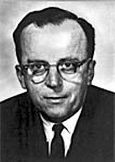

El Memorándum
Washington D.C. 23 de Abril de 1963
Memorandum
Para: Los Miembros y Afiliados de La Red Intergaláctica de Computadores De: J. C. R. Licklider
Asunto: Tópicos para Discusión en la Próxima Reunión
Así empezaba uno de los documentos más interesantes, y problablemente muy influyente, en la historia de la tecnología, el famoso Memorandum a los miembros de la red intergaláctica de computadores, de Joseph Carl Robnett Licklider.

Cuando leí este memorándum(1) me encontré con un caso de uso que describe la necesidad de sistemas operativos distribuidos, de definir “lenguajes” que permitan la interoperabilidad entre sistemas diversos, RPC, ejecución remota de procesos, la descripción de una arquitectura orientada a servicios, integración entre múltiples lenguajes de programación (un programa en Fortran puede invocar rutinas escritas en Algol que se encuentran disponibles en otra máquina en algún punto de la red), la descripción de las máquinas virtuales (en el sentido de la JVM, o el CLR de .Net), bibliotecas de carga dinámica en tiempo de ejecución (DLLs, .so), ¡el concepto de MashUp!, el concepto de la computación en la nube (es transparente para el usuario en que nodo de la red se ejcuta una tarea) y un sinfín de otros elementos, algunos que recién estamos desarrollando. Por favor léanlo, acá está.
Lo más importante es que este memorandum, y la inspiración e influencia de Licklider sobre Ivan Sutherland, y Robert Taylor fueron los motivadores para la creación de ARPANET y posteriormente Internet. Hay una linea que va desde Vannevar Bush hasta Tim Berners Lee, y pasa por Licklider.
Pero Licklider tenía un visión que está en parte plasmada en ese memo, pero que es más detallada en un artículo de 1960, publicado en la IRE Transactions on Human Factors in Electronics, que se llama “Man Computer Symbiosis” (Simbiosis Hombre Computadora)
Simbiosis
La higuera es polinizada únicamente por el insecto Grossorun Blastophaga. La larva del insecto vive en el ovario de la higuera, y allí obtiene su alimento. El árbol y el insecto son, por lo tanto, en gran medida interdependientes: el árbol no se puede reproducir sin el insecto, el insecto no puede comer sin el árbol. Juntos constituyen no sólo una viable, sino que una productiva asociación. Esta cooperativa “de vivir juntos en asociación íntima, e incluso cercana unión, entre dos organismos diferentes”, se llama simbiosis.
La “simbiosis hombre-computadora” es una sub clase de los sistemas hombre máquina. Hay muchos sistemas hombre-máquina. En la actualidad, sin embargo, no hay simbiosis hombre-computadora. El propósito de este artículo es presentar el concepto, y speramos, promover el desarrollo de la simbiosos hombre-computadora analizando algunos problema de la interacción entre los hombres y las máquinas de cómputo, llamando la atención sobre principios aplicables a la ingeniería hombre-máquina, y apuntando algunas preguntas para las que se necesitan respuestas e investigación.(*)
A esta visión Licklider la llamaba Machine-Aided-Cognition (MAC), y se materializó en un proyecto en el MIT, el Proyecto MAC, que incluía el desarrollo de un sistema operativo que implementara el concepto de multitarea (multitasking), sistemas de archivos (filesystems), políticas de respaldo regulares, tiempo compartido, ambientes multi usuarios. De hecho, C y Unix fue una reacción de llevar a cabo de forma más simple este programa de Licklider (¿recuerdan peor es mejor?).
Licklider fue un inspirador, un hombre que tuvo la oportunidad de liderar, y contactar a un conjunto de mentes brillantes, su red intergalactica, era una red de personas que bajo la influencia de este pensador hicieron grandes aportes a la tecnología de información, desde el PC, hasta internet, en todas esas tecnologías está la influencia de las ideas de Licklider. A eso llamo yo motivar.
Notas:
(*) Prometo que un día voy escribir algo sobre esste paper de Licklider, porque es muy interesante.
(1) Conocí la historia de Licklider a través de este notable post de Jeff Moser.